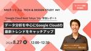
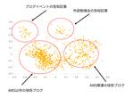
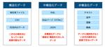
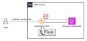
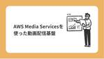

Technology - NRIネットコムBlog
https://tech.nri-net.com/archive/category/Technology
NRIネットコム社員が業務で利用している幅広い技術やナレッジについて紐解くブログメディアです。
フィード

「Google Cloud Next Tokyo '24」参加レポート：データ分析を中心にGoogle Cloudの最新トレンドをキャッチアップ ～NRIネットコム TECH AND DESIGN STUDY #41～
Technology - NRIネットコムBlog
こんにちは、ブログ運営担当の小嶋です。 8月27日（火）12:00~12:30 当社主催の勉強会「NRIネットコム TECH & DESIGN STUDY #41」が開催されます!! 8月上旬に開催されたGoogle Cloudの国内大規模カンファレンスである「Google Cloud Next Tokyo '24」。 同イベントは、最新のクラウド技術に触れる貴重な機会です。 本勉強会では、このイベントに参加した横田が特に注目した、データ分析に関する領域についてご紹介します。 登壇者 横田真斗 社会人2年目のインフラエンジニア Google Cloudの資格を5つ取得。年内に全資格取得を目指し…
1日前

アラフィフ管理職がAWS全冠を目指した理由 6
6
Technology - NRIネットコムBlog
本記事は AWSアワード記念！夏のアドベントカレンダー 23日目の記事です。 🎆🏆 22日目 ▶▶ 本記事（最終回） 🏆🎆 はじめに NRIネットコムの重本です。当社ブログ初投稿です。 「AWSアワード記念！夏のアドベントカレンダー」のトリを務めさせていただきます。 簡単に自己紹介をさせていただくと、当社に新人として入社後ほぼインフラを担当してきました。 現在は組織を管理・推進する側を担当しています。 オンプレからサーバー仮想化への流れに乗りながら、次のビッグウェーブであるクラウドにも自然と乗った形となります。 この度、「2024 AWS All Certifications Engineer…
2日前

牛丼とフレンチで考える、スタートアップとSIerの仕事スタイル 25
Technology - NRIネットコムBlog
本記事は AWSアワード記念！夏のアドベントカレンダー 22日目の記事です。 🎆🏆 21日目 ▶▶ 本記事 ▶▶ 23日目 🏆🎆 こんにちは、クラウド事業推進部所属の小山です。 暑い日が続きますね、暑いのが苦手な私は夏季休暇中は季節が真逆のオーストラリアに避難することにしました。 コアラに癒されてきます。 この度、2024 Japan AWS All Certifications Engineer に選出いただき、 AWS アワード記念！夏のアドベントカレンダー の 22 日目を担当させていただくことになりました。 今回は自社サービスを提供するスタートアップ企業から SIer に転職した経験か…
3日前

オンプレミス Windows Server を AWS Systems Manager 管理下にする 3
Technology - NRIネットコムBlog
本記事は AWSアワード記念！夏のアドベントカレンダー 21日目の記事です。 🎆🏆 20日目 ▶▶ 本記事 ▶▶ 22日目 🏆🎆 こんにちは、クラウド事業推進部所属の今村です。 今年の夏も暑い日が続いておりますが、暑さに負けずゴルフを頑張っております。 最近はナイターゴルフに興味津々です。 この度、2024 Japan AWS All Certifications Engineer に選出いただき、 AWSアワード記念！夏のアドベントカレンダー の21日目を担当させていただくことになりました。 今回はオンプレミス Windows Server に AWS Systems Manager エージ…
4日前
ユースケのユースケース Case2:Amazon Bedrock Prompt Flowを活用した生成AI Slack Bot構築編 ～NRIネットコム TECH AND DESIGN STUDY #40～
Technology - NRIネットコムBlog
こんにちは、ブログ運営担当の小嶋です。 8月21日（水）19:00~20:00 当社主催の勉強会「NRIネットコム TECH & DESIGN STUDY #40」が開催されます!! NRIネットコム TECH AND DESIGN STUDY #40 今回のユースケースはSlack Bot! 最新のAmazon BedrockのPrompt Flowsを使って、AIモデルを簡単に作成し、Slack Botとして活用する方法をお届けします。 2024年7月10日にリリースされたばかりのこの機能を使えば、生成AIを利用したアプリケーション開発の敷居をぐっと下げることができます。 さらに、エージェ…
5日前

Terraformプロビジョナーを使って、さらなる自動化へ 7
Technology - NRIネットコムBlog
本記事は AWSアワード記念！夏のアドベントカレンダー 20日目の記事です。 🎆🏆 19日目 ▶▶ 本記事 ▶▶ 21日目 🏆🎆 こんにちは後藤です。 この度、2024 AWS All Certifications Engineersに選出していただきました。次回も選出されるように日々努力を続けていきます。 私が書いた記事を振り返ってみると、気づけばTerraformの記事ばかりになっていました。 以前に「Terraformはこんなこともできるのか」シリーズを書いたのですが、今回も「Terraformはこんなこともできるのか」系のお話です。 tech.nri-net.com 紹介したいのは「T…
5日前

Amazon Titan Text Embedding V2を使って自社ブログの検索システムをつくってみた
Technology - NRIネットコムBlog
本記事は AWSアワード記念！夏のアドベントカレンダー 19日目の記事です。 🎆🏆 18日目 ▶▶ 本記事 ▶▶ 20日目 🏆🎆 こんにちは、堤です。 現在、AWSアワード記念！夏のアドベントカレンダーと題しまして日々記事が投稿されています。 毎日面白い記事が投稿されるので、読むのが楽しみです。 そんなネットコムブログも2024年7月29日現在で669本ものブログ記事があり、とてもそのすべての記事を追いきれなくなってきました。 今回はそんな自分のために、Embeddingモデルを使ったブログ検索システムを作成してみました。 Embeddingとは 検索システム Embeddingの作成 可視化…
8日前

『データ分析基盤を作ってみよう ～設計編～』というタイトルで勉強会を開催しました 26
Technology - NRIネットコムBlog
こんにちは、佐々木です。 CodeCommitをはじめとした幾つかのサービスが終了に向かいつつあるとのアナウンスを聞き、特にSimpleDBについては遂にこの時がきたのかと感慨にひたっております。 そんな感傷はさておき、今日は7月18日に『データ分析基盤を作ってみよう ～設計編～』というタイトルで実施した勉強会の動画・資料の公開と、簡単な解説をします。短い文章なので、ぜひお付き合いください。 動画・資料 動画 www.youtube.com 資料 speakerdeck.com 講演のテーマ タイトルを読んで勘の鋭い方は気がついていたかもしれませんが、この技術同人誌をベースに話しています。タイ…
9日前

LambdaでWEBアプリケーションをホストしたい 117
Technology - NRIネットコムBlog
本記事は AWSアワード記念！夏のアドベントカレンダー 18日目の記事です。 🎆🏆 17日目 ▶▶ 本記事 ▶▶ 19日目 🏆🎆 はじめに クラウド事業推進部の望月です。NRIネットコムでクラウドエンジニアをしています。 主にネットワーク領域を得意としています。 この度、2024 Japan AWS Top Engineersと、昨年に続き2024 Japan AWS All Certifications Engineersに選出いただきました。 Top Engineersについては、何が評価されて選ばれたのか全く分かりませんが、応募はしてみるものです。 Network領域で応募したもののSe…
9日前

AWS Media Servicesを使った動画配信基盤
Technology - NRIネットコムBlog
本記事は AWSアワード記念！夏のアドベントカレンダー 17日目の記事です。 🎆🏆 16日目 ▶▶ 本記事 ▶▶ 18日目 🏆🎆 はじめに みなさんこんにちは、梅原です。この度2024 Japan AWS Jr. Championsに選出いただきました。 サポートしていただいたみなさんありがとうございました。これからもよろしくお願いします。 さて今回は、AWS上で動画配信基盤を構築するためのサービスであるAWS Media Servicesについてご紹介したいと思います。 動画配信技術の詳細というより、動画配信基盤をAWS上で構築するための概要的な話が多めです。ぜひ参考にしていただけたら嬉しい…
10日前
AWS SES の承認ポリシーを設定してみた 4
Technology - NRIネットコムBlog
本記事は AWSアワード記念！夏のアドベントカレンダー 16日目の記事です。 🎆🏆 15日目 ▶▶ 本記事 ▶▶ 17日目 🏆🎆 こんにちは、坂本です。 今年の 2024 Japan AWS All Certifications Engineer に選ばれましたので AWSアワード記念！夏のアドベントカレンダー を機にブログ初投稿になります。 最近、Amazon Simple Email Service（以下：SES） の承認ポリシーを設定する機会があったので、今回は備忘もかねて書いてみます。 はじめに SES は API エンドポイントまたは SMTP インターフェイス を利用してメール配信…
11日前
資格取得におけるモチベーションの保ち方 44
Technology - NRIネットコムBlog
本記事は AWSアワード記念！夏のアドベントカレンダー 15日目の記事です。 🎆🏆 14日目 ▶▶ 本記事 ▶▶ 16日目 🏆🎆 こんにちは、栗田です。この夏の好きなものは涼しい室内、嫌いなものはゲリラ豪雨です。 このたび、2024 Japan AWS All Certifications Engineersに選出されました。NRIネットコムに入社して以来ひとつの目標にしていたので、今年無事に達成することができてうれしいです。 目標にしていたといいつつも、AWS認定全冠までの道のりは私の場合結構な長期戦で、達成するまでに本当にいろいろありました。 今回は、達成するまでに重要なポイントのひとつで…
12日前

Terraformのtemplatefile関数活用方法
Technology - NRIネットコムBlog
本記事は AWSアワード記念！夏のアドベントカレンダー 14日目の記事です。 🎆🏆 13日目 ▶▶ 本記事 ▶▶ 15日目 🏆🎆 カラスに襲われたためしばらくその付近には近づいていません。中村です。 Terraformのライセンス変更があったためこれからどうなるのか心配していましたが、IBMがHashiCorpを買収することが発表されたため落ち着きそうで安心しています。今後も動向を注視していきます。 本記事ではTerraformの組み込み関数templatefileについてご紹介します。 templatefile関数とは 指定されたパスにあるテンプレートファイルを読み取り、その内容をテンプレー…
15日前
Boto3で出てくるNextTokenとは何者か ～NextTokenとのうまい付き合い方～
Technology - NRIネットコムBlog
本記事は AWSアワード記念！夏のアドベントカレンダー 13日目の記事です。 🎆🏆 12日目 ▶▶ 本記事 ▶▶ 14日目 🏆🎆 こんにちは、西内です。 この度、2024 AWS All Certifications Engineersに選出していただきました！ 今年も資格が新たに3つ追加されましたが、引き続き維持できるよう頑張ります！！ そして、来年のswagは更に豪華になっていることを期待しています...！ （Amazonのギフト券とかもらえないかなあ～） AWSのAPIを実行したときに見るアレ NextTokenとは何者か NextTokenとの付き合い方 その１ whileを使う Ne…
16日前
Amazon BedrockでClaude 3.5 Sonnetの画像理解・分析機能を使用して画像生成を検証・再生成・自動化する(Amazon Titan Image Generator G1編)
Technology - NRIネットコムBlog
小西秀和です。 以前の記事では、Anthropic Claude 3.5 Sonnetの画像理解・分析機能を活用して、Stability AI Stable Diffusion XL(SDXL)で生成した画像を検証・再生成するAmazon Bedrockの使用例を紹介しました。 Claude 3.5 SonnetでStable Diffusion XLによる画像生成を要件が満たされるまで繰り返すAmazon Bedrockの使用例 本記事では、Anthropic Claude 3.5 Sonnetの画像理解・分析機能を活用して、Amazon Titan Image Generator G1で生…
17日前
AWSマンスリーアップデートピックアップ！！ 2024年7月分 ～NRIネットコム TECH AND DESIGN STUDY #39～
Technology - NRIネットコムBlog
こんにちは、ブログ運営担当の小嶋です。 8/8（木）12:00~12:30 当社主催の勉強会「NRIネットコム TECH & DESIGN STUDY #39」が開催されます!! 今回のTECH & DESIGN STUDYでは、日々数多く発表されているAWSのアップデートのうち、当社の腕利きエンジニア目線で厳選した前月のアップデート情報をお話させていただきます！ 是非ご参加ください！ 登壇者 西内渓太 2022年NRIネットコム入社のクラウドエンジニア 2024 Japan AWS All Certifications Engineers ブログ執筆：https://tech.nri-net…
17日前
SSE-KMSで暗号化したS3に対して、ファイルアップロードする際に必要な権限について整理する
Technology - NRIネットコムBlog
本記事は AWSアワード記念！夏のアドベントカレンダー 12日目の記事です。 🎆🏆 11日目 ▶▶ 本記事 ▶▶ 13日目 🏆🎆 はじめに こんにちは、西本です。AWSアワード記念！夏のアドベントカレンダー 12日目を担当させていただきます。 2024 Japan AWS All Certifications Engineersに選出 昨年に引き続き、「2024 Japan AWS All Certifications Engineers」に選出いただきました。受賞者数も激増、試験も新しいものが増えてきていますが、引き続き頑張っていきたいと思います。 今回のテーマ AWS Key Manage…
17日前
OCI Artifactとはなんぞや？というお話
Technology - NRIネットコムBlog
本記事は AWSアワード記念！夏のアドベントカレンダー 11日目の記事です。 🎆🏆 10日目 ▶▶ 本記事 ▶▶ 12日目 🏆🎆 はじめに ふと、ECRを眺めてて気づいた そもそもOCIってなんぞや Open Container Initiative OCI Artifactってなんぞや ちなみにImage Indexとかってなに？ 結局OCI Artifactはどこで活躍するの？ OCI準拠のイメージ署名 SOCI Indexを利用したLazy Loading まとめ はじめに ozawaです。今年もAllCert継続となりました。引き続きよろしくお願いします。 先ほどエアコンの水漏れ対応工…
18日前
Claude 3.5 SonnetでStable Diffusion XLによる画像生成を要件が満たされるまで繰り返すAmazon Bedrockの使用例
Technology - NRIネットコムBlog
小西秀和です。 Amazon BedrockのAIモデルとして利用可能になったAnthropic Claude 3ファミリーでは画像認識機能が導入されました。そして、最新モデルのAnthropic Claude 3.5 Sonnetにも更に強化された画像認識機能が備わっています。 これらのAnthropic Claudeモデルの画像認識機能、特にOCR(光学文字認識)の性能については、いくつかの簡単な試行と比較を実施してみたことがあります。詳細は以下の記事でご覧いただけます。 Using Amazon Bedrock for titling, commenting, and OCR (Opti…
18日前
なぜ令和のエンジニアに呆活が必要なのか
Technology - NRIネットコムBlog
本記事は AWSアワード記念！夏のアドベントカレンダー 10日目の記事です。 🎆🏆 9日目 ▶▶ 本記事 ▶▶ 11日目 🏆🎆 こんにちは、越川です。皆さんは呆活という言葉を聞いたことがありますか？ちなみに、僕はつい最近知りました。今回はこの呆活が現代人、特に我々エンジニアにとって必要ではないか、というテーマで記事を書いてみようと思います。 加速度的に増える情報量 物理的な境界がなくなる昨今 エンジニアこそ呆活が必要 おススメの呆活３選 ➀散歩 ➁カフェ ➂温泉 最後に 加速度的に増える情報量 現代人が１日に触れる情報量は、江戸時代と比べると１年分、平安時代にいたっては一生分と言われています。…
19日前
Amazon Bedrock Prompt FlowsでDifyの質問分類器つくってみた
Technology - NRIネットコムBlog
本記事は AWSアワード記念！夏のアドベントカレンダー 9日目の記事です。 🎆🏆 8日目 ▶▶ 本記事 ▶▶ 10日目 🏆🎆 こんにちは、桃をたくさんもらって食べきれるか心配していたら、妻が友達におすそ分けを提案してきたので、急いで桃を食べきろうとしている志水です。ブログ執筆しながらも桃を食べています。申し訳ないですが、桃は独り占めさせていただきたいです。 NRIネットコムのブログイベント「AWSアワード記念！夏のアドベントカレンダー」9日目で、昨日は今年から同じAmbassadorsとなった丹くんでした。CCoEについて非常に分かりやすい記事となっていて勉強になりました。私はなんとか2年目更…
22日前
企業・組織によって異なるカタチ。事例と共通点から見る CCoE の活動と在り方 ～AWSブログ編～
Technology - NRIネットコムBlog
本記事は AWSアワード記念！夏のアドベントカレンダー 8日目の記事です。 🎆🏆 7日目 ▶▶ 本記事 ▶▶ 9日目 🏆🎆 出典：https://aws.amazon.com/jp/blogs/news/how-to-get-started-your-own-ccoe/ はじめに 今から始める CCoE、3 つの環境条件と 3 つの心構えとは クラウドがビジネスにもたらす経済的価値を追い求める道のり～クラウドジャーニー～ クラウド活用推進組織（CCoE） クラウド活用推進組織（CCoE）が機能する3つの環境条件とチームメンバーの心構え CCoE 活動検討のはじめの一歩 クラウド活用推進活動全体…
23日前
キャッシュ制御の観点で見る CloudFront
Technology - NRIネットコムBlog
本記事は AWSアワード記念！夏のアドベントカレンダー 7日目の記事です。 🎆🏆 6日目 ▶▶ 本記事 ▶▶ 8日目 🏆🎆 すっかり夏ですね、単純に嫌です。 日が落ちないと外に出るのも厳しい暑さですが皆様いかがお過ごしでしょうか。 西です。 今年は無事 2024 Japan AWS All Certifications Engineer に残れましたので AWSアワード記念！夏のアドベントカレンダー 7 番手です。 はたしていつまで All Certifications Engineer に残り続けられるのでしょうか。 さて、本題です。 今回も例によって Amazon CloudFront (…
24日前
S3のMFA Deleteの有効・無効化の方法
Technology - NRIネットコムBlog
本記事は AWSアワード記念！夏のアドベントカレンダー 6日目の記事です。 🎆🏆 5日目 ▶▶ 本記事 ▶▶ 7日目 🏆🎆 こんにちは。黒木です。 「AWSの資格いくつ持ってるの？」 「全部持ってます」 って答えられるようになりたかったですが、新たな認定試験がいくつか増えたことでまだ先になりそうです。٩( ᐛ )وｶﾞﾝﾊﾞﾙｿﾞｰ さて今回はS3のMFA Deleteの有効化と無効化を検証をした時、少しつまづいたポイントがありましたので備忘をかねて書きたいと思います。 要約 事前準備 MFA Deleteの有効化 つまづきポイント１ つまづきポイント２ MFA Deleteの無効化 おわりに…
25日前
つりあげた エンジニアが とびかかってきた！
Technology - NRIネットコムBlog
本記事は AWSアワード記念！夏のアドベントカレンダー 5日目の記事です。 🎆🏆 4日目 ▶▶ 本記事 ▶▶ 6日目 🏆🎆 AWSアワード記念！夏のアドベントカレンダー！！！！ (´꒳`ﾉﾉﾞﾊﾟﾁﾊﾟﾁﾊﾟﾁﾊﾟﾁ--- ということで、6月21日にAWS Partner Network（APN）参加企業を対象にした表彰プログラムにて、NRIネットコムからは23名が表彰されました。 私、小林恭平も「2024 Japan AWS All Certifications Engineers」に選出されましたが、「2024 Japan AWS Top Engineers」には選出ならず… 来年またがん…
1ヶ月前
AWS Security Hubを活用した効率的でセキュアなマルチアカウント管理
Technology - NRIネットコムBlog
本記事は AWSアワード記念！夏のアドベントカレンダー 4日目の記事です。 🎆🏆 3日目 ▶▶ 本記事 ▶▶ 5日目 🏆🎆 はじめに AWS Security Hubとは AWS Security Hubに情報を集約 AWS Security Hubから情報を受け取る AWS Security Hub導入における課題 どのように統制を効かせていくのか AWS Security Hubを有効化していないリージョンの設定 AWS Security Hubを導入した場合の組織構成 リージョンを切り替えて検知内容を確認することで負担が増加している AWS Security Hubの運用における課題 検…
1ヶ月前
【祝10周年！】歴史・年表でみるAWSサービス(Amazon Cognito編) －機能一覧・概要・アップデートのまとめ・入門－
Technology - NRIネットコムBlog
本記事は AWSアワード記念！夏のアドベントカレンダー 3日目の記事です。 🎆🏆 2日目 ▶▶ 本記事 ▶▶ 4日目 🏆🎆 小西秀和です。 今年も私は2024 Japan AWS Top Engineer、2024 Japan AWS All Certifications Engineerに選出され、弊社の表彰者が参加するブログイベント「AWSアワード記念！夏のアドベントカレンダー」に記事を投稿することができました。 私は時々、AWSサービスのアップデートの歴史を辿って、その機能をまとめる記事を書いていますが、今回はちょうど良いタイミングのAWSサービスがありましたので、それについて書いてみま…
1ヶ月前
S3のフォルダ構造とプレフィックスの話
Technology - NRIネットコムBlog
本記事は AWSアワード記念！夏のアドベントカレンダー 2日目の記事です。 🎆🏆 1日目 ▶▶ 本記事 ▶▶ 3日目 🏆🎆 こんにちは、佐々木です。 いろいろ思うところがあって、AWS Ambassadorに復帰することになりました。今年からTier制になって、最上位のPrincipal Ambassadorというのができるようです。まだクライテリアは発表されていませんが、せっかくなのでPrincipal目指して頑張っていきます。ということで、NRIネットコムのブログイベント「AWSアワード記念！夏のアドベントカレンダー」の2日目です。 今回は基本に立ち返って、S3のフォルダ構造とプレフィック…
1ヶ月前
ECSサービス間通信に入門しよう!/AWS Firewall Managerを活用したマルチアカウント管理～NRIネットコム TECH AND DESIGN STUDY #38～
Technology - NRIネットコムBlog
こんにちは、ブログ運営担当の小野です。 7/30（火）19:00~20:00 当社主催の勉強会「NRIネットコム TECH & DESIGN STUDY #38」が開催されます!! 今回のTECH & DESIGN STUDYでは、当社クラウドエンジニアから「ECSサービス間通信に入門しよう」と、「AWS Firewall Managerを効果的に活用したマルチアカウント管理方法」についてお話します。 【1本目】 ECSサービス間通信に入門しよう 昨今はコンテナベースで開発することが主流となっており、AWSではコンテナオーケストレーションサービスであるAmazon ECSが多く使われています。…
1ヶ月前
ブログイベント「AWSアワード記念！夏のアドベントカレンダー」開催します!
Technology - NRIネットコムBlog
こんにちは、ブログ運営担当の小嶋です。 今月のブログイベントのお知らせです！ 2024年6月21日に行われたAWSのイベント「AWS Summit Japan」にて、NRIネットコムの社員23名が以下に選出・表彰されました！！ 2024 Japan AWS All Certifications Engineers 2024 Japan AWS Top Engineers 2024 Japan AWS Ambassadors 2024 Japan AWS Jr. Champions 今回は、選出・表彰を記念して、「AWSアワード記念！夏のアドベントカレンダー」と題してブログを執筆します！！ 7/…
1ヶ月前